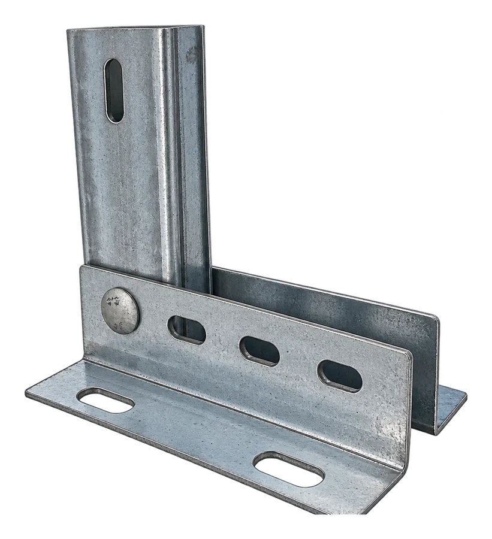
← 拖曳切換角度 →← Drag to switch →棚架型Canopy Structure
結構堅固穩定，具高承載力，適用於較大跨距。Strong, stable structure with high load capacity for larger spans.
以 RC 固定腳座，並依支架高度選用 C 型鋼或 H 型鋼作為主結構，適用屋頂棚架、停車棚與地面型案場。Bases are anchored to RC footings, with C-channels or H-beams chosen as the main structure according to the required height — for rooftop canopies, carports and ground-mounted sites.
- 以 RC 固定腳座，穩固耐用Bases anchored to RC footings for a solid, lasting structure
- 依支架高度選用 C 型鋼或 H 型鋼C-channel or H-beam chosen according to the required height
- 高承載、大跨距，依案場量身設計High load capacity and large spans, designed for each site
規格Specifications
常用規格，單位 mm，尺寸為高 × 寬，可依案場需求調整。Common sizes in mm (H × B); adjustable to each project.
| 材料Material | 尺寸Size | 厚度Thickness |
|---|---|---|
| H 型鋼熱浸鍍鋅H-beamHot-dip galvanised | 150 × 75 | 腹板 5／翼板 7Web 5 / Flange 7 |
| 200 × 100 | 腹板 5.5／翼板 8Web 5.5 / Flange 8 | |
| C 型鋼鎂鋁鋅C-channelZn-Al-Mg | 125 × 50 | 2.3 |
| 150 × 65 | 2.3、3.2 |
檢驗數據Test Results
SGS 第三方試驗。完整報告可來信索取。Independent SGS tests. Full reports on request.
鎂鋁鋅 C 型鋼抗彎・正面（1.6mm）Zn-Al-Mg C-channel bending, front (1.6mm)
SGS KR-21-00029
鎂鋁鋅 C 型鋼抗彎・側面（1.6mm）Zn-Al-Mg C-channel bending, side (1.6mm)
SGS KR-21-00030
縱樑組合Beam joint
SGS KK-18-08507A
棚架型實績Canopy Structure Projects
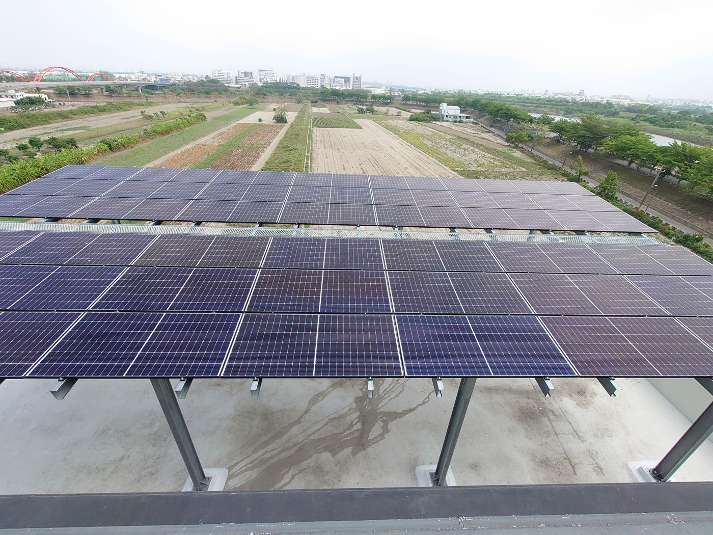
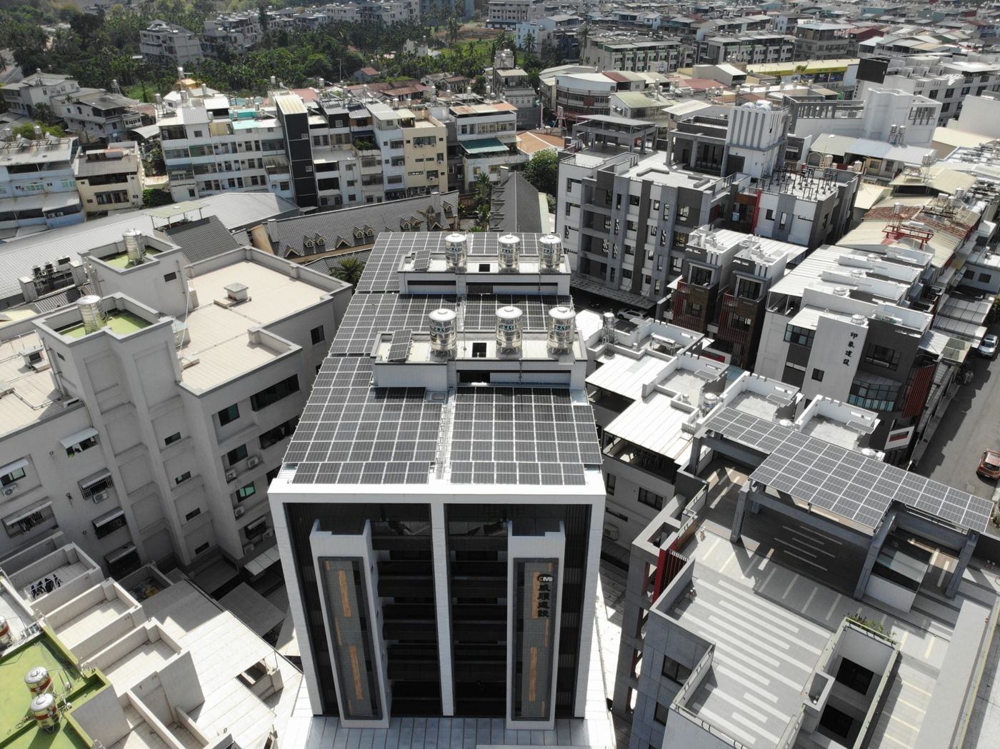
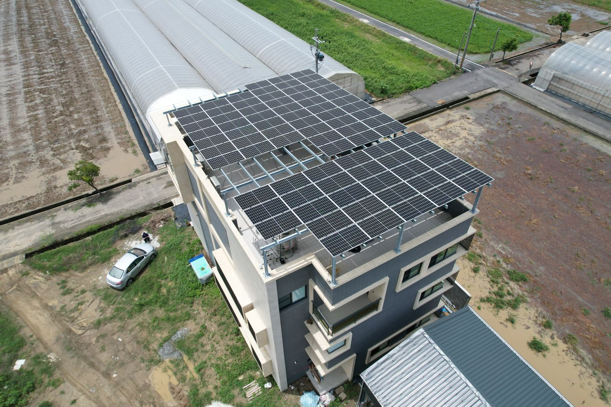
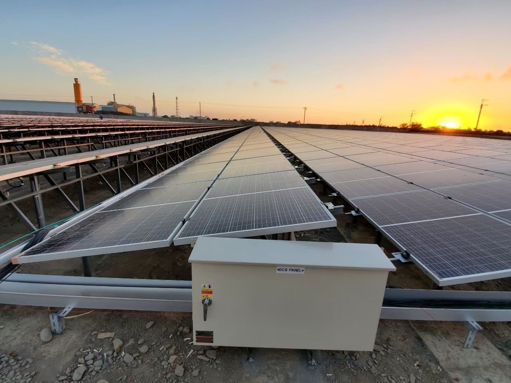
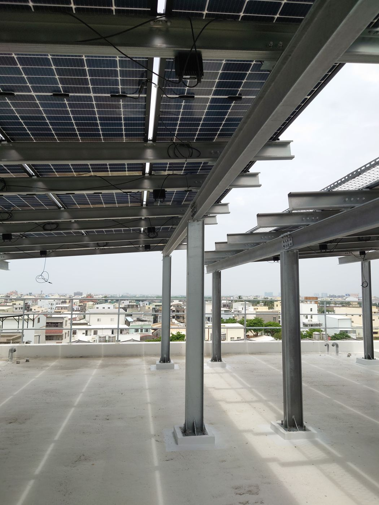
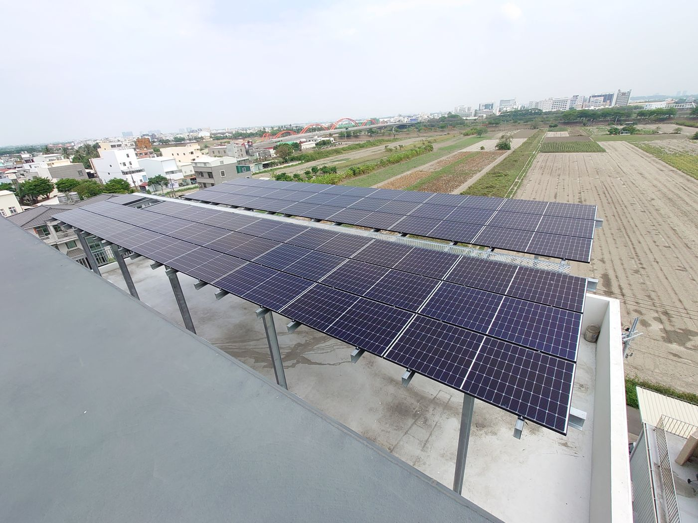
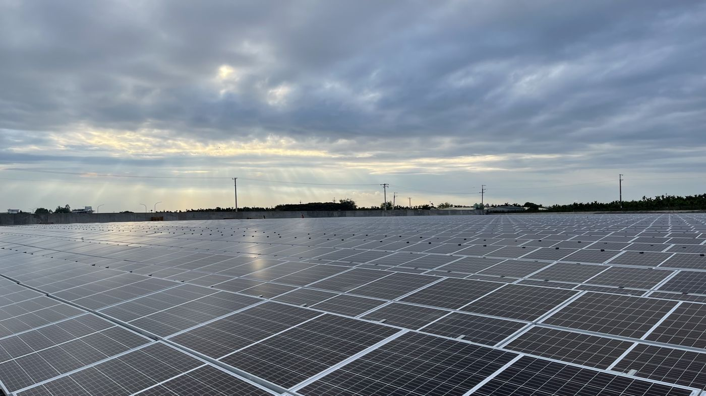
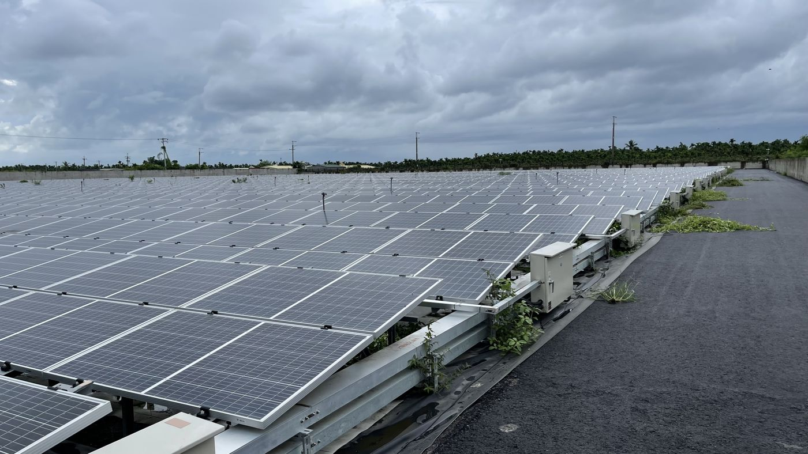
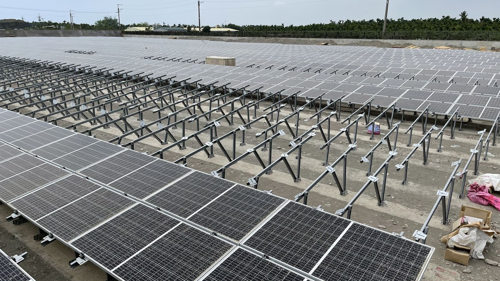
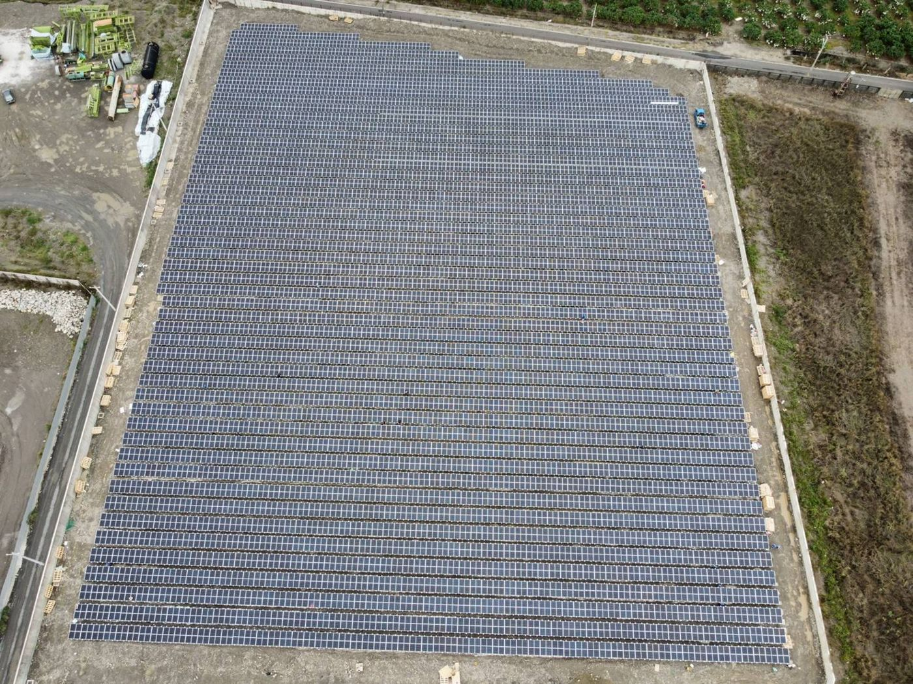
其他產品Other Products
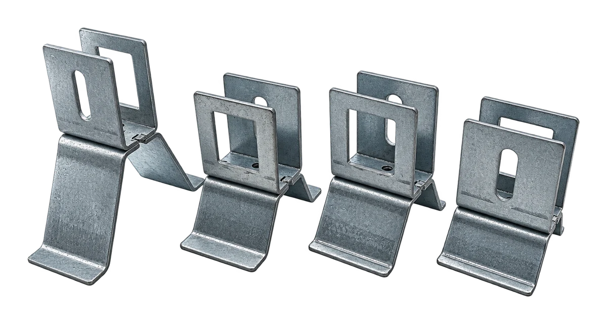
屋頂平鋪型Flat Roof Mount
八字型底座，施工簡便，可直接以自攻螺釘固定於浪板上。A-frame base that is simple to install — fixes directly to the roof sheet with self-tapping screws.
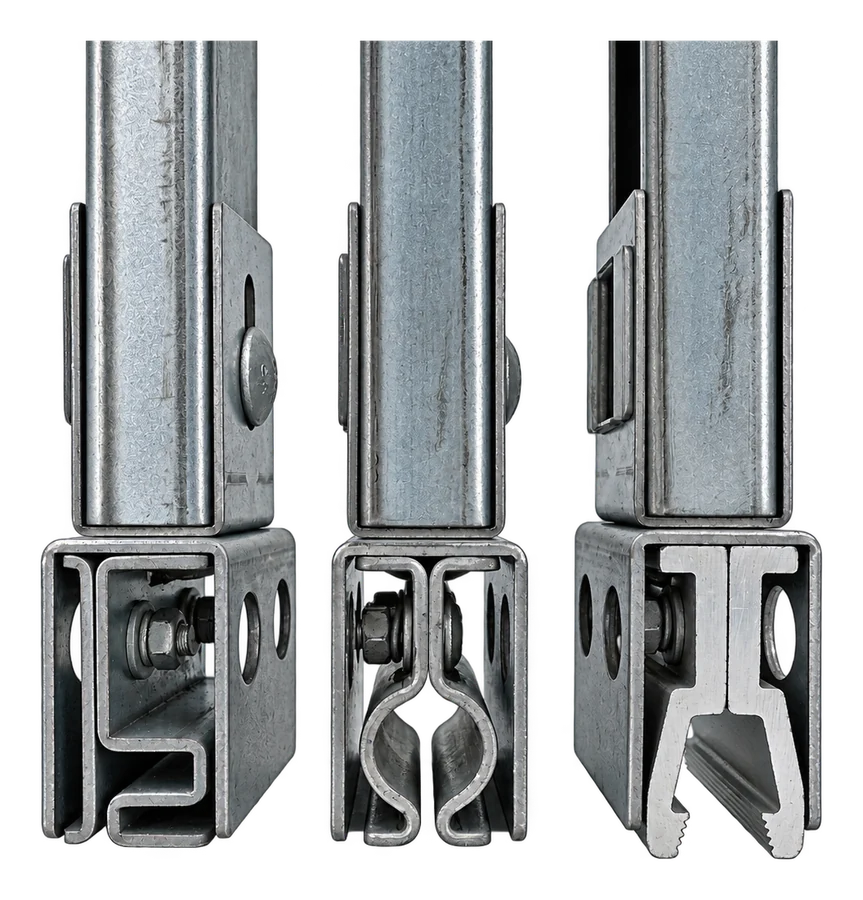
屋頂夾具型Roof Clamp Mount
以夾式安裝於浪板上，不傷屋頂浪板設計。Clamps onto the roof sheet — designed not to damage the roof.
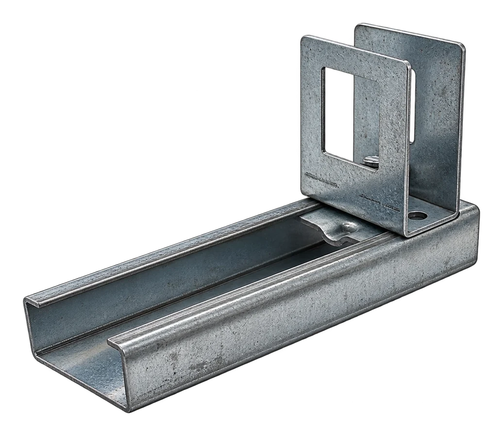
滑軌型Rail Mount
底座採滑軌設計，可依需求自由調整間距，適用琉璃鋼瓦或特殊浪板。Sliding-rail base with freely adjustable spacing, for glazed steel tiles and special roof profiles.
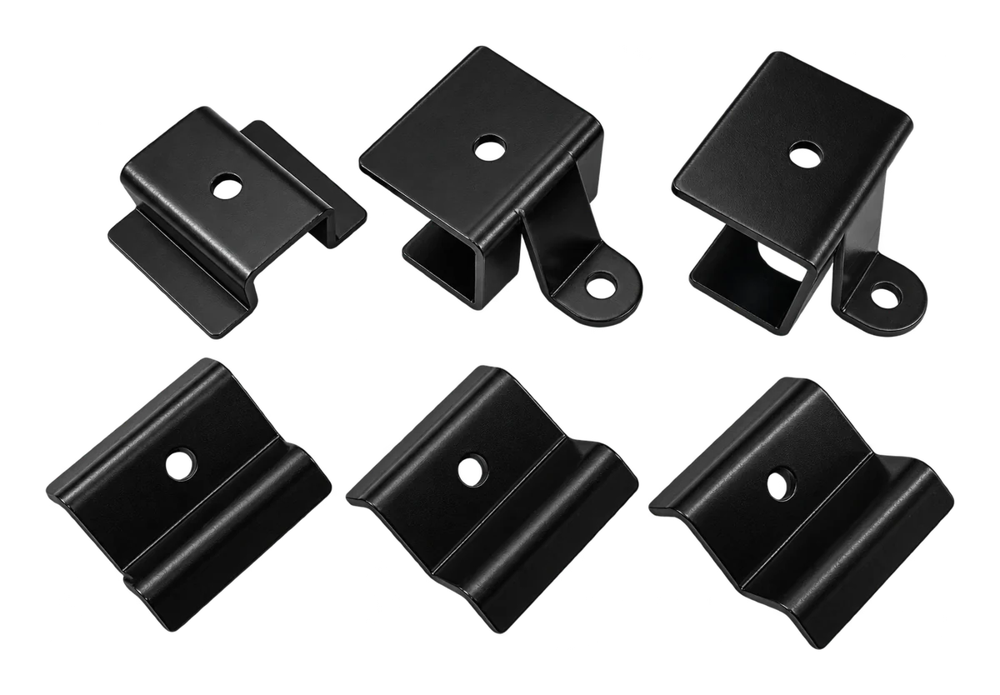
常用配件Accessories
因應不同案場提供各式不同配件，未全數列出。A range of accessories for different sites — not all are listed.
需要專案規劃支援嗎？Need help planning your project?
提供案場地點與屋頂型式，我們安排現場勘查並提供報價。Send us your site location and roof type — we will arrange a survey and quote.